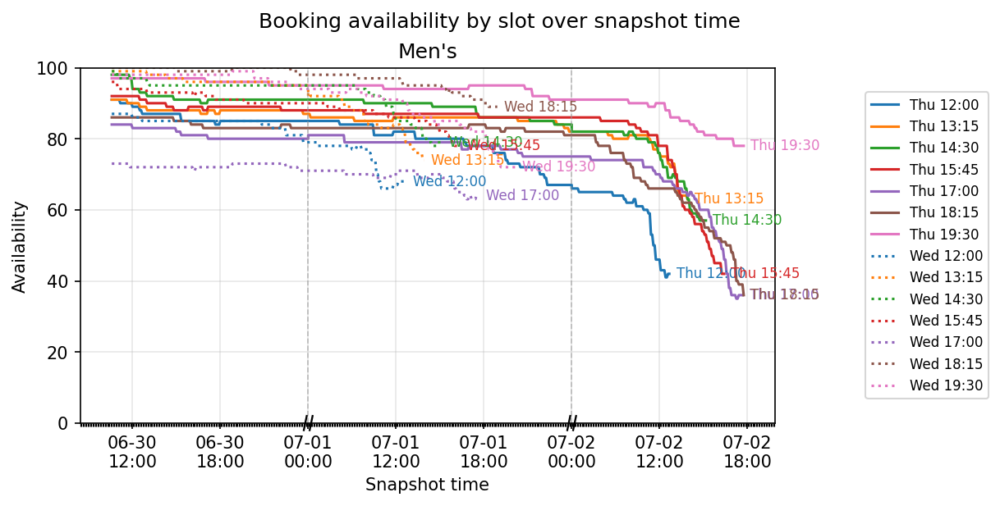
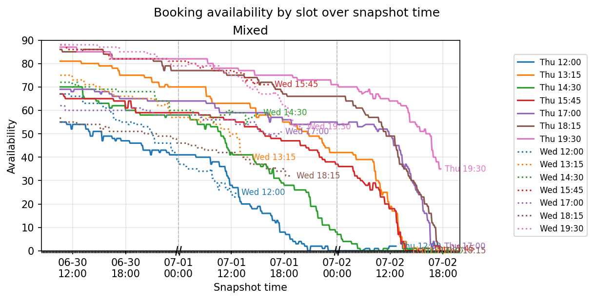
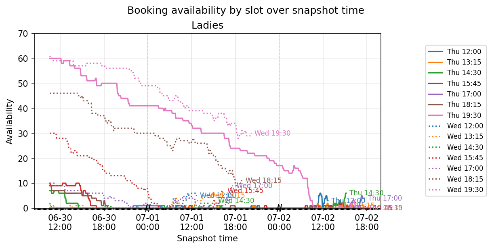
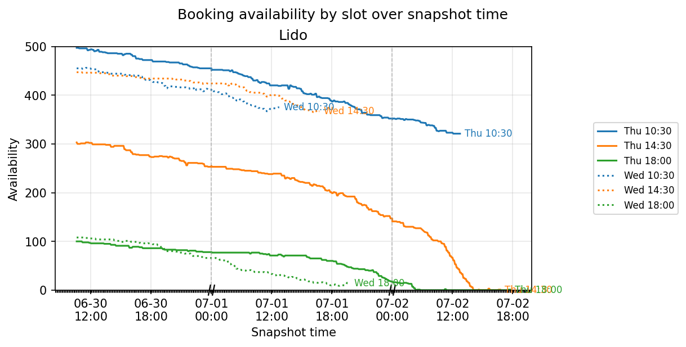
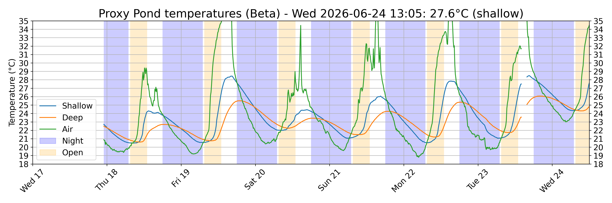
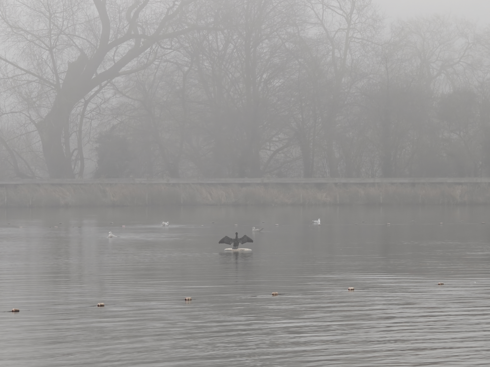
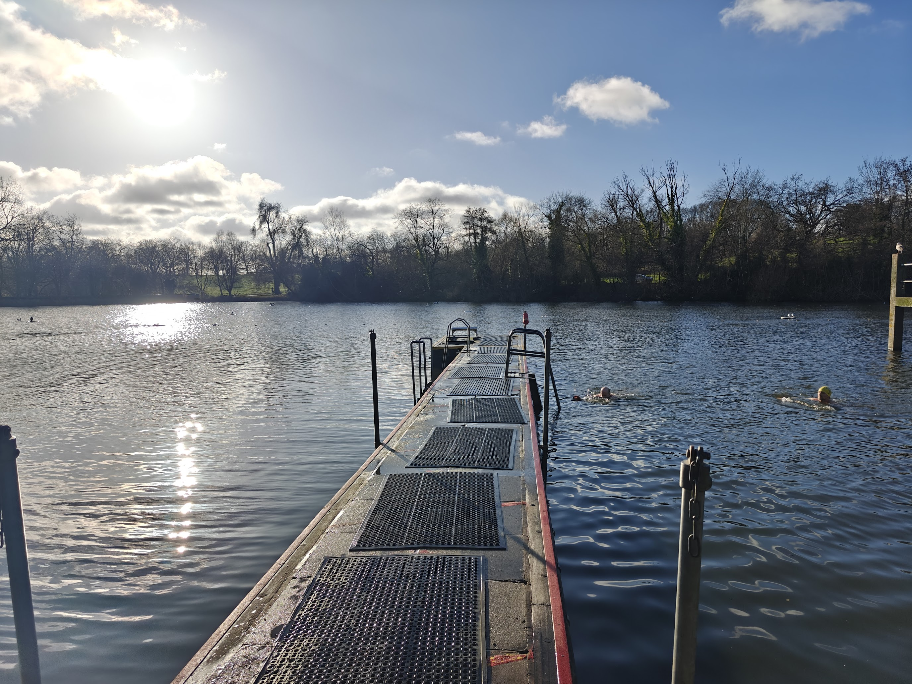

Highgate Men's Pond Association (HMPA) is providing a summary of the availability of tickets for the bookable swimming sessions.
These charts show how ticket availability changes through the day for upcoming sessions.




We also provided real-time temperatures for the pond for a few months in 2024 and 2025, but the City of London removed the sensor in April 2025. The real-time temperatures here are now being sourced from a (very) small garden pond, as a proxy. Its temperature varies much more than the pond.
Here is a chart of the temperatures over the last few days.


